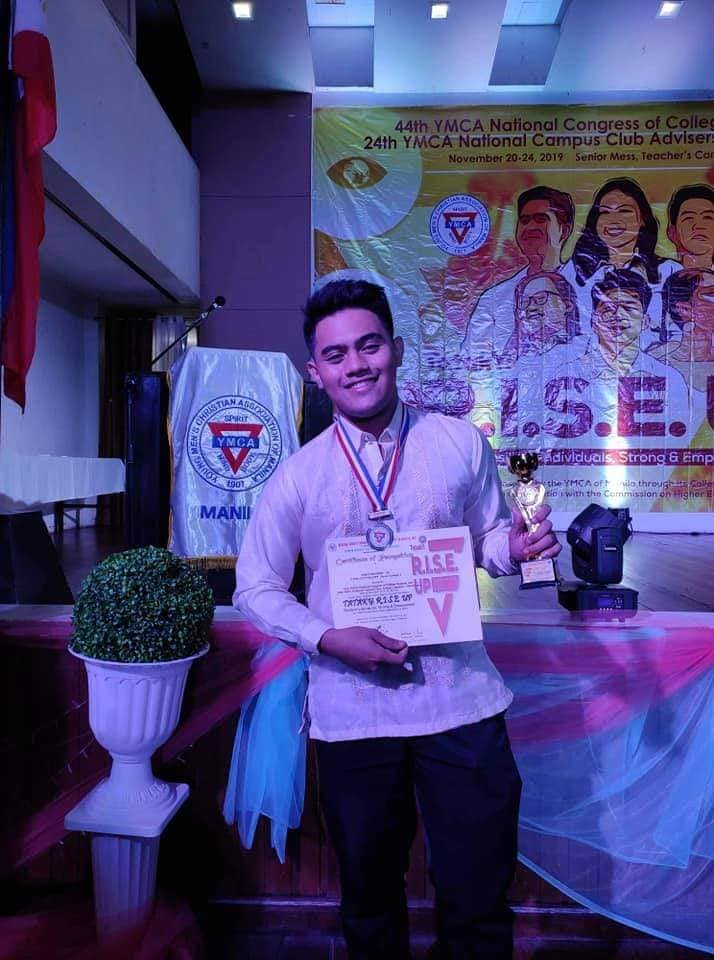

1 Assuming that you've read my biography—because you're here and going through my skillset—you’d already know that I was an introverted kid. 2 While introversion is often associated with shyness or social withdrawal, it has actually played a significant role in shaping and refining many of my skills. 3 One of the most notable skills I’ve developed is my communication ability. 4 As contradictory as it may sound, being an introvert has made me a strong active listener. 5 I have a natural ability to pay close attention to people, understand their emotions, and empathize with their situations. 6 This skill has not only helped me build meaningful relationships, but it has also made me an effective team player in the workplace. 7 By being attuned to the needs and concerns of others, I am able to respond thoughtfully, making me a reliable point of contact for both colleagues and clients. 8 Another key skill that I possess is my artistic ability, which I consider to be my strongest asset. 9 Ever since I was a child, I have had an innate passion for creativity, constantly bringing ideas to life through drawings, paintings, and design projects. 10 My artistic skills are not limited to traditional mediums; I also apply them in problem-solving and innovation. 11 Whether it’s brainstorming fresh ideas, conceptualizing unique solutions, or designing visuals, I am always eager to push boundaries and create something impactful. 12 This ability to think outside the box has proven valuable in both personal and professional settings, allowing me to contribute innovative ideas wherever I go. 13 Alongside my communication and artistic skills, I also take pride in my leadership abilities. 14 If you recall from my biography, I have had the opportunity to work in administrative and managerial roles, which have strengthened my ability to lead and guide a team. 15 Leadership, to me, is more than just overseeing a group of people—it is about inspiring, motivating, and ensuring that every member is working towards a shared vision. 16 I believe in fostering an environment where collaboration and productivity thrive. 17 Whether it was managing a team in customer service or working on group projects, I have always made sure to set clear goals, provide direction, and offer continuous support to my peers. 18 Adaptability is another crucial skill I have developed over the years.

19 Life and work environments are ever-changing, and I have learned to embrace change with resilience. 20 Whether it was shifting career paths from architecture to IT, adjusting to different roles in the workplace, or navigating the challenges of an international choir tour, I have always found ways to quickly learn, adjust, and perform efficiently. 21 My ability to adapt allows me to stay resourceful, open-minded, and ready to tackle new challenges without hesitation. 22 Moreover, I am highly proficient in computer literacy, which has been a great advantage in my career. 23 From mastering different programming languages such as Visual Basic, C++, Java, and web development tools to handling digital real estate management systems, I have continuously expanded my technical expertise. 24 Beyond coding, I am adept at using various software, including graphic design tools, content management systems, and office productivity applications. 25 My knowledge in IT and digital tools has allowed me to work efficiently, automate tasks, and enhance my problem-solving abilities in a tech-driven world.
1 Singing karaoke has always been one of my favorite pastimes, allowing me to express my emotions through music while having fun. 2 Growing up in a musically inclined family, I was constantly surrounded by melodies, making it natural for me to develop a love for singing. 3 Whether I am performing alone in my room or singing my heart out with friends and family, karaoke gives me a sense of joy and freedom. 4 Apart from casual singing, I have also been fortunate to be part of a choir, where I have learned discipline, teamwork, and the beauty of harmonizing with others. 5 Performing in a choir has strengthened my vocal abilities and given me the opportunity to travel and compete internationally. 6 Aside from music, art has always been an essential part of my life, particularly sketching and painting with acrylic and oil. 7 Ever since I was a child, I have loved bringing my ideas to life through colors and brushstrokes, finding it therapeutic and fulfilling. 8 Painting allows me to translate emotions and thoughts into something visual, creating pieces that tell stories beyond words. 9 Alongside my passion for music and art, I also enjoy creative writing, as it helps me put my thoughts into words and craft compelling narratives. 10 Writing has become my outlet for self-expression, enabling me to explore different perspectives and emotions through storytelling. 11 Another hobby that I deeply enjoy is learning new things, as I find excitement in acquiring new skills and expanding my knowledge. 12 Whether it’s learning a new programming language, improving my artistic techniques, or discovering interesting facts about the world, I thrive on continuous growth. 13 I believe that curiosity and the willingness to learn keep life exciting and fulfilling.
14 Aside from creative and intellectual pursuits, I also love challenging my mind with puzzles, especially solving the Rubik’s Cube. 15 The complexity of the cube intrigues me, as it requires logical thinking, pattern recognition, and problem-solving skills. 16 Solving it gives me a great sense of accomplishment, proving that patience and strategy can overcome any challenge. 17 Playing puzzles and brain games has helped me sharpen my critical thinking and analytical abilities. 18 I find it fascinating how both creativity and logic play vital roles in shaping my interests and skillset. 19 The combination of music, art, writing, learning, and puzzles allows me to maintain a balanced and dynamic perspective in life. 20 These hobbies not only bring me joy but also contribute to my personal and professional growth, making me a more well-rounded and adaptable individual.
1 Music has always played an integral role in my life, shaping my emotions, memories, and even my sense of identity. 2 Whether it is listening to a beautifully composed symphony or singing my heart out in a choir, music is my refuge and my source of joy. 3 I have always found solace in melodies and harmonies, as they have the power to transport me to different emotions and experiences. 4 The way music can tell a story without words fascinates me, and I often find myself lost in its beauty. 5 Beyond just listening, I also have a deep passion for playing musical instruments. 6 Ever since I was young, I have been drawn to the guitar, piano, and even percussion instruments. 7 Learning to play an instrument has not only been a creative outlet for me but also a way to challenge myself and improve my discipline. 8 Mastering a new piece, no matter how difficult, gives me a great sense of accomplishment and fulfillment. 9 One specific genre of music that I deeply love is chorale music. 10 Singing in a choir is a unique experience that has taught me the value of teamwork and harmony. 11 There is something incredibly powerful about voices blending together to create something greater than the sum of their parts. 12 It is an art form that requires precision, discipline, and most importantly, emotion. 13 Being part of a choir has allowed me to connect with others on a profound level through the shared experience of making music together.
14 Apart from music, I have a strong love for walking, as it allows me to clear my mind and reconnect with my surroundings. 15 Whether I am walking through a busy city street or a quiet park, I find peace in the rhythmic movement of my steps. 16 Walking also helps me reflect on my thoughts, providing a space where I can be alone yet connected to the world around me. 17 My love for travel is closely tied to my love for walking. 18 Exploring new places, meeting different people, and experiencing diverse cultures bring me immense joy and fulfillment. 19 Travel broadens my perspective and teaches me valuable life lessons that cannot be learned from books alone. 20 Every journey I take enriches my soul and gives me a deeper appreciation for the beauty of our world.